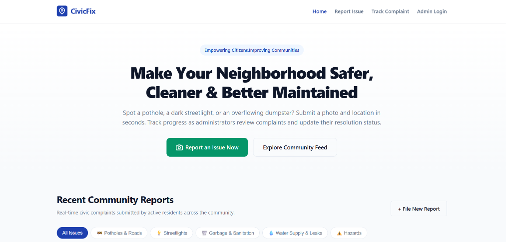

Hi, I'm Priti Kumari
Second-Year B.Tech CSE (AI & ML) Student
Studying at Narula Institute of Technology with an interest in web development and software engineering. I focus on learning core computer science, practicing data structures in Java, and building practical applications like CivicFix.
const developer = {
name: "Priti Kumari",
education: "B.Tech in CSE (AI & ML)",
institution: "Narula Institute of Technology",
currentYear: "2nd Year",
graduating: 2029,
coreInterests: [
"Software Development",
"Web Development",
"Artificial Intelligence & ML",
"Problem Solving"
],
openToOpportunities: true
};About Me
A quick overview of my academic background, technical focus, and how I approach learning.
I'm a second-year B.Tech Computer Science and Engineering student specializing in Artificial Intelligence and Machine Learning at Narula Institute of Technology (CGPA: 8.88).
My primary focus is developing strong computer science fundamentals. I practice problem solving and data structures in Java, while learning modern web development across both frontend and backend systems.
Through building CivicFix, I've gained hands-on experience connecting client interfaces with Node.js and Express REST APIs and modeling data in MongoDB. I enjoy turning practical ideas into working code and improving each project step by step.
Education
My formal engineering education and current academic standing.
Narula Institute of Technology
B.Tech in Computer Science and Engineering (Artificial Intelligence & Machine Learning)
Key Academic Coursework & Learning Areas
Skills & Tools
The programming languages, frameworks, and developer tools I actively use in coursework and projects.
Programming
Frontend
Backend & DB
Tools
Projects
A full-stack web application I am actively designing and building to make local civic issue reporting transparent and trackable.
CivicFix
Work in ProgressCivic Issue Reporting & Tracking Platform
A full-stack web application designed to help citizens report local civic issues (such as road hazards, broken streetlights, or sanitation problems) and transparently monitor the resolution workflow.
Core Features & Architecture

Contact
I'm always open to discussing student projects, internship opportunities, or learning from other developers. Feel free to connect on LinkedIn, explore my code on GitHub, or send me an email.